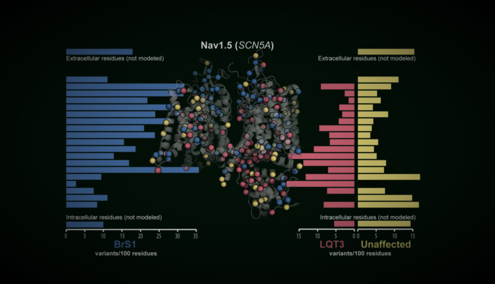
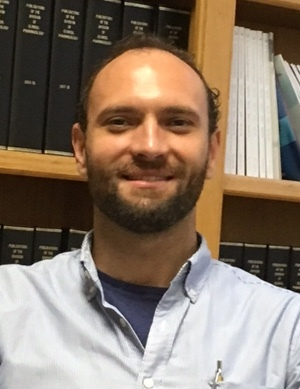
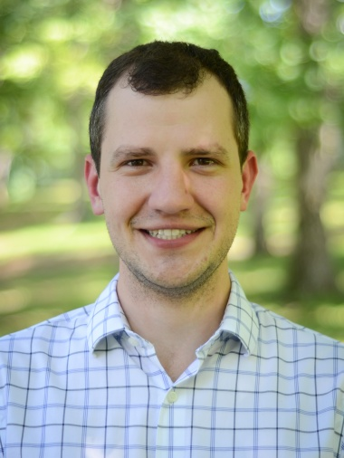

People
A multidisciplinary team — wet-lab, computation and clinic — dedicated to understanding how genetic variation shapes individual risk.

Brett Kroncke, Ph.D.
Assistant Professor of Medicine · Director, Kroncke Lab
Vanderbilt University Medical Center · VanCART · Department of Pharmacology · Center for Structural Biology · Vanderbilt Genomics Institute · Data Science Institute
Brett founded the Kroncke Lab in 2019 to build a translational genomics program focused on molecular cardiogenetics, leading a multidisciplinary team dedicated to understanding how genetic variation shapes individual risk for arrhythmia and adverse clinical outcomes.
Research focus. We develop high-throughput experimental pipelines, CRISPR-edited iPSC models, and predictive statistical frameworks to resolve variants of uncertain significance in ion-channel genes such as KCNH2 and SCN5A. Most recently the lab has built an open-source, LLM-assisted pipeline for literature curation and variant interpretation, extending these methods from long QT and Brugada syndromes to atrial fibrillation.
Innovation & translation. Brett is the inventor on the 2022 patent Bayesian Method to Estimate Variant-Induced Disease Penetrance (US-20220406461-A1) and developed VariantBrowser.org, a portal that disseminates penetrance estimates to clinicians, genetic counselors and researchers.
Grants & training. Funding includes NIH R01HL160863 (2022–2027), NIH K99/R00 HL135442 (2017–2022), and an AHA Career Development Award (2021–2024). Brett earned his Ph.D. in Biophysics from the University of Virginia and trained as a postdoc at Vanderbilt, integrating structural biology with cardiac arrhythmia genetics.
Devyn Mitchell
Research Assistant · joined 2019
A key contributor to our research on the genetics of heart arrhythmias, focusing on high-throughput characterization of KCNH2 variants. His initiative enabled the lab's pivot to iPSCs — reprogramming PBMCs to hiPSCs and leading characterization of differentiated cardiomyocytes on the Nanion CardioExcyte96.

Rizwan Ullah, Ph.D.
Postdoctoral Fellow · 2019
Ph.D. in Zoology (Aligarh Muslim University, 2019); characterized cathepsin L from the liver fluke Fasciola gigantica and identified candidate therapeutics.
Loren Vanags
Research Assistant · 2018
Established the lab's wet-lab facilities; expert in CRISPR-Cas9 editing of iPSCs, developed RYR2 functional assays and helped map variant effects for KCNH2.

Krystian Kozek, Ph.D.
Kroncke Lab · 2018–2019
Ph.D. in Pharmacology (Vanderbilt, 2018) on GIRK-channel modulation; refined high-throughput characterization of missense variants in Kv11.1 (KCNH2/hERG).
Matthew Ku
iPSC-CM electrophysiology
Contributed to the lab's iPSC-cardiomyocyte toolkit — high-throughput extracellular field-potential analysis — and to RYR2–CPVT penetrance and Kv11.1 trafficking studies.
Suah Woo
iPSC-CM electrophysiology
Worked on iPSC-cardiomyocyte field-potential analysis and quantitative proteomics of Kv11.1 (hERG) trafficking in cardiomyocytes.
Alex Shen
RyR2 / CPVT penetrance
Led structural and Bayesian analysis of RYR2 missense variants in CPVT, producing continuous estimates of variant penetrance.
Kundivy Dauda
Undergraduate researcher
A Vanderbilt undergraduate and Chancellor's Scholar; curated carrier and phenotype data and contributed to the lab's RYR2–CPVT penetrance estimates.
Nidhi Patel
iPSC-CM electrophysiology
Contributed to the lab's iPSC-cardiomyocyte extracellular field-potential analysis tools.
William Morris
iPSC-CM electrophysiology
Contributed to the lab's iPSC-cardiomyocyte extracellular field-potential analysis tools.
Kohei Yamauchi
Visiting researcher · Japan
A visiting researcher from Shiga University of Medical Science; collaborated on RYR2–CPVT penetrance and arrhythmia cohort analyses.